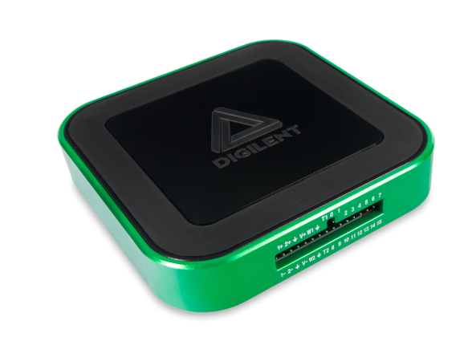
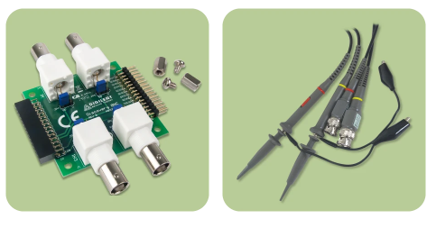
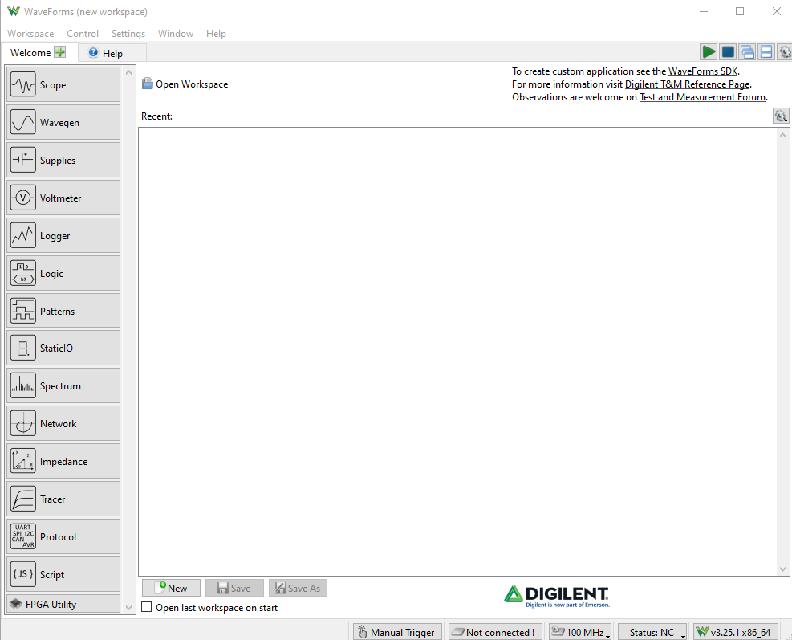
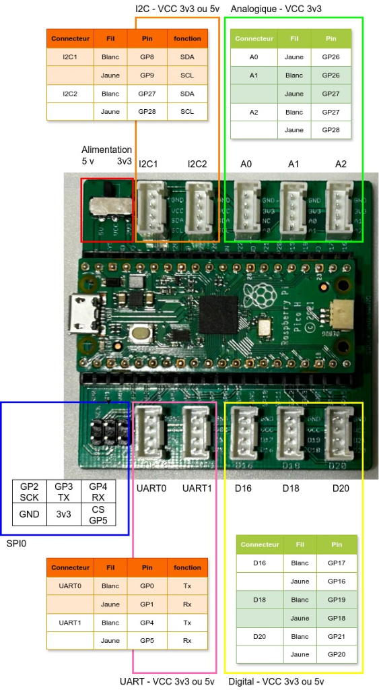
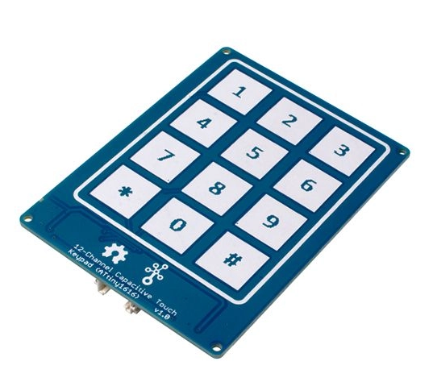
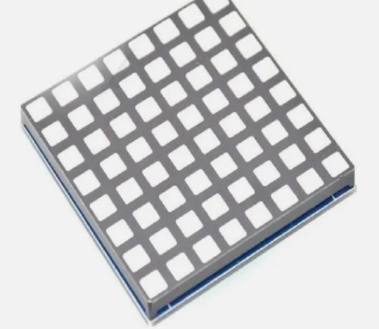
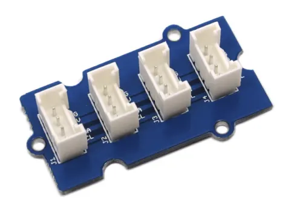
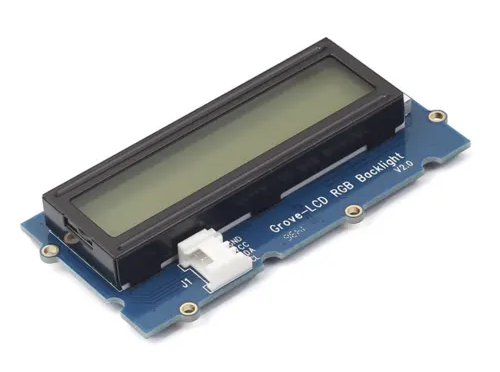
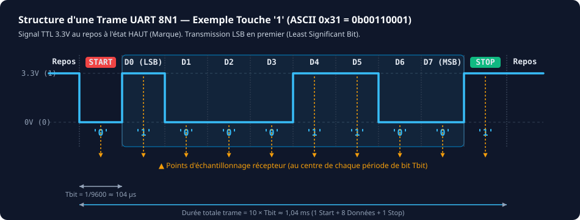
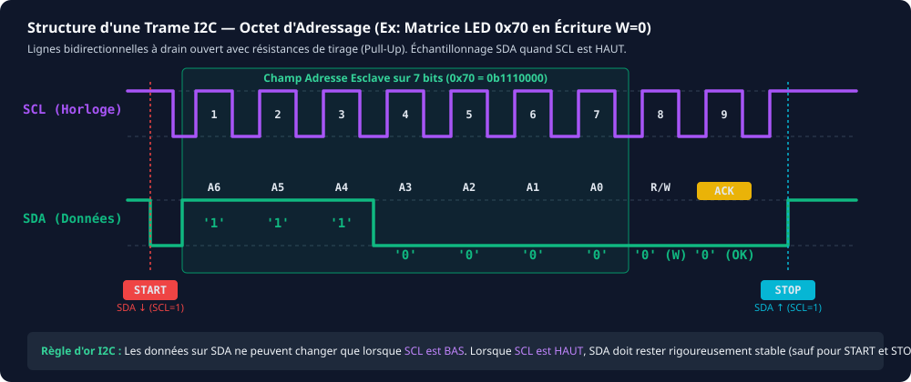

Analyse & Décodage de Trames UART et I²C à l'Oscilloscope et à l'Analyseur Logique (Analog Discovery)
À la suite de notre cours sur la numération (binaire, hexadécimal, ASCII), vous allez observer comment ces suites de bits se traduisent concrètement sous forme de signaux électriques sur les broches physiques d'un microcontrôleur.

Centrale d'acquisition USB (Oscilloscope 2 voies, Analyseur logique 16 voies).

Adaptateur BNC pour Analog Discovery et sondes x1/x10 avec pinces de masse.

Logiciel de pilotage (Modules Scope, Logic et Protocol).

Microcontrôleur RP2350 (MicroPython) avec sélecteur de tension 3.3V.

12 touches tactiles gérées par ATtiny1616. Envoi série à 9600 bauds.

Afficheur 64 LEDs rouges piloté par HT16K33 (Adresse I²C 0x70).

Multiplicateur de ports passif pour bus partagé (SDA, SCL, VCC, GND).

Écran 2x16 caractères rétroéclairé (Contrôleur 0x3E, RGB 0x62).
La liaison UART (Universal Asynchronous Receiver Transmitter) est une liaison point-à-point, bidirectionnelle et asynchrone : aucun signal d'horloge n'est véhiculé entre l'émetteur et le récepteur. L'accord préalable sur la vitesse de transmission (exprimée en bauds ou bits/s) est donc obligatoire.

Figure 1 : Chronogramme électrique d'une trame UART 8N1 pour la touche '1' (Code ASCII 0x31 = 0b00110001). Remarquez la transmission LSB en premier.
UART0 du Grove Shield. D'après le tableau de repérage :
Rx du Pico) ← Signal émis par la touche du clavier !Tx du Pico).1+) sur le fil Jaune (GP1 / Rx).Figure 2 : Repérage officiel des broches du Grove Shield (Connecteurs UART0/UART1 et I2C1/I2C2).
Téléversez et exécutez le script suivant dans Thonny IDE. Ce script configure l'UART0 matérielle du Pico à 9600 bauds et affiche dans la console REPL les caractères reçus.
from machine import UART, Pin import time # Initialisation UART0 : GP0=TX, GP1=RX à 9600 bauds uart = UART(0, baudrate=9600, tx=Pin(0), rx=Pin(1)) print("=== Récepteur UART initialisé (9600 bauds) ===") print("Appuyez sur une touche du clavier tactile...") while True: if uart.any(): octet_recu = uart.read(1) code_ascii = octet_recu[0] caractere = chr(code_ascii) print(f"Touche : '{caractere}' | Décimal : {code_ascii} | Hex : {hex(code_ascii)} | Binaire : {bin(code_ascii)}") time.sleep(0.05)
1 V / div, décalage vertical (Offset) à -1.5 V pour centrer le signal 0-3.3V.200 µs / div (fenêtre totale de 2 ms, idéal pour une trame de 10 bits à 9600 bauds).Channel 1, Type = Edge, Sens = Front Descendant (Falling), Niveau = 1.5 V, Mode = Normal ou Single.Appuyez sur la touche '1' du clavier. L'oscilloscope fige la trame à l'écran.
| Bit | START | D0 (LSB) | D1 | D2 | D3 | D4 | D5 | D6 | D7 (MSB) | STOP |
|---|---|---|---|---|---|---|---|---|---|---|
| Niveau relevé | 0 | ... | ... | ... | ... | ... | ... | ... | ... | 1 |
0b______________________.
0x________.
0b__________________ = 0x______ → Caractère ASCII déduit : ________
Les ingénieurs utilisent un analyseur logique pour décoder automatiquement des millions de trames sans calcul manuel.
RX = DIO 0 | Baud rate = 9600 | Data bits = 8 | Parity = None | Stop = 1.
Pour approfondir la gestion des erreurs de transmission et la tolérance temporelle, soumettez ce prompt à une IA générative (ChatGPT, Gemini, etc.) :
"Dans une liaison série asynchrone UART 8N1 à 9600 bauds, quel est le pourcentage maximal de dérive d'horloge toléré entre l'émetteur et le récepteur avant qu'une erreur de cadrage (Framing Error) n'apparaisse sur le bit de stop ? Explique le rôle du sur-échantillonnage 16x du récepteur."Le bus I²C (Inter-Integrated Circuit) est un bus série synchrone, bifilaire et multi-composants inventé par Philips. Contrairement à l'UART, il véhicule une horloge partagée et permet de brancher plusieurs dizaines de périphériques esclaves sur seulement deux fils.
SCL (Serial Clock, horloge générée par le maître) et SDA (Serial Data, données bidirectionnelles).
Figure 3 : Chronogramme d'un octet d'adressage I²C vers la matrice LED (Adresse 0x70 en écriture, ACK esclave au 9e coup d'horloge).
On commence par analyser la communication avec un composant unique : la Matrice de LED 8x8 rouge Grove (contrôleur HT16K33, adresse I²C matérielle 0x70).
Matrice 8x8 (Adresse 0x70)
from machine import I2C, Pin import time # Initialisation bus I2C0 sur GP8 (SDA) et GP9 (SCL) à 100 kHz (Standard Mode) i2c = I2C(0, scl=Pin(9), sda=Pin(8), freq=100000) ADRESSE_MATRICE = 0x70 print("Envoi d'un ordre d'allumage toutes les 2 secondes...") while True: # Activation de l'oscillateur interne du HT16K33 (Commande 0x21) i2c.writeto(ADRESSE_MATRICE, b'\x21') time.sleep(2.0)
- Voie 1 (SDA) et Voie 2 (SCL) à 1 V / div.
- Base de temps : 20 µs / div (période d'horloge de 10 µs à 100 kHz).
- Déclenchement (Trigger) : Voie 1 (SDA), Front descendant, Niveau 1.5 V, Mode Normal.
| Coup d'horloge | 1 | 2 | 3 | 4 | 5 | 6 | 7 | 8 | 9 |
|---|---|---|---|---|---|---|---|---|---|
| Rôle du bit | A6 | A5 | A4 | A3 | A2 | A1 | A0 | R/W | ACK |
| Niveau SDA relevé | ... | ... | ... | ... | ... | ... | ... | ... | ... |
a) Isolez les 7 bits d'adresse ($A_6 \dots A_0$) : 0b_____________________. Convertissez en hexadécimal : 0x________. Retrouve-t-on l'adresse de la matrice ?
b) Que vaut le 8e bit ($R/\bar{W}$) ? Pourquoi est-il à '0' ?
c) Que vaut le 9e bit (ACK) ? Qui génère ce niveau électrique : le maître (Pico) ou l'esclave (Matrice) ? Justifiez.
Nous connectons à présent deux constituants différents sur le même bus physique en intercalant le Hub Grove I²C.
Sur un bus I²C partagé, les broches SDA et SCL de tous les esclaves sont électriquement reliées entre elles en parallèle. Comment un composant sait-il qu'un message lui est adressé sans interférer avec les autres esclaves ?
Figure 4 : Le Hub Grove I²C (centre) permet de relier en bus partagé la Matrice LED 8x8 (gauche, adresse 0x70) et l'écran LCD RGB (droite, adresses 0x3E et 0x62).
I2C1 du Shield.I2C1 du Shield à l'un des ports du Hub Grove I²C.Exécutez le script MicroPython suivant pour scanner le bus et piloter alternativement chaque écran :
from machine import I2C, Pin import time i2c = I2C(0, scl=Pin(9), sda=Pin(8), freq=100000) # 1. Scan automatique du bus I2C print("--- Scan du bus I2C en cours ---") peripheriques = i2c.scan() print(f"Adresses détectées ({len(peripheriques)}) : {[hex(addr) for addr in peripheriques]}") # Adresses cibles sur le bus ADDR_MATRICE = 0x70 # Matrice LED ADDR_LCD_TEXT = 0x3E # Contrôleur d'affichage LCD texte ADDR_LCD_RGB = 0x62 # Contrôleur couleur de fond RGB # 2. Dialogue sélectif alterné while True: # Message destiné UNIQUEMENT à la matrice LED (allumage oscillateur) print("Envoi trame -> Matrice (0x70)") i2c.writeto(ADDR_MATRICE, b'\x21') time.sleep(1.0) # Message destiné UNIQUEMENT au rétroéclairage LCD (Couleur Bleue) print("Envoi trame -> LCD RGB (0x62)") i2c.writeto(ADDR_LCD_RGB, b'\x00\x00') # Reset mode time.sleep(1.0)
i2c.scan() dans Thonny ?
0x70, que fait le contrôleur LCD (0x3E) ? Acquitte-t-il le message ? Comment réagit-il aux octets de données suivants ?
SCL = DIO 0, SDA = DIO 1, Format d'adresse = 7-bit Address.0x70 puis 0x62.Pour explorer les limites matérielles du bus I²C en milieu industriel, soumettez ce prompt à une IA :
"Sur un bus I2C, quel est l'impact de la capacité parasite des câbles longs sur les temps de montée du signal (résistances pull-up) ? Explique le mécanisme d'arbitrage en cas de multi-maîtres et la fonction de 'Clock Stretching' par laquelle un esclave lent peut temporiser le maître."Vous allez concevoir l'architecture logicielle et matérielle d'un contrôleur d'accès à code secret (Digicode) intégrant les deux bus de communication étudiés.
"Code: ** "). En cas de code correct, le fond devient Vert et affiche "ACCES VALIDE". En cas d'erreur, le fond devient Rouge avec "CODE ERREUR"."1234" (la touche '#' valide la saisie, la touche '*' efface).from machine import UART, I2C, Pin import time # Initialisation des périphériques de communication uart = UART(0, baudrate=9600, tx=Pin(0), rx=Pin(1)) i2c = I2C(0, scl=Pin(9), sda=Pin(8), freq=100000) CODE_SECRET = "1234" code_saisi = "" def init_systeme(): # Initialisation de la matrice 8x8 (0x70) i2c.writeto(0x70, b'\x21') # Oscillo ON i2c.writeto(0x70, b'\x81') # Display ON # Initialisation LCD RGB (0x62) : Rétroéclairage Blanc au repos i2c.writeto(0x62, bytes([0x00, 0x00])) i2c.writeto(0x62, bytes([0x08, 0xAA])) print("Système de contrôle d'accès prêt !") def afficher_statut(valide): if valide: print("ACCES ACCORDE -> Fond Vert, Motif Coche") # TODO (Élèves) : Configurer le registre RGB pour passer en vert # TODO (Élèves) : Envoyer le motif de coche sur la matrice 8x8 else: print("ACCES REFUSE -> Fond Rouge, Motif Croix") # TODO (Élèves) : Configurer le registre RGB pour passer en rouge # TODO (Élèves) : Envoyer le motif de croix sur la matrice 8x8 init_systeme() while True: if uart.any(): touche = uart.read(1).decode('utf-8', errors='ignore') if touche == '#': # Validation afficher_statut(code_saisi == CODE_SECRET) code_saisi = "" elif touche == '*': # Effacement code_saisi = "" else: code_saisi += touche print(f"Code actuel : {'*' * len(code_saisi)}") time.sleep(0.05)
'#' : observez la trame UART reçue du clavier, immédiatement suivie de la trame I²C émise vers les afficheurs sur le Hub.
| Domaine | Critères d'évaluation | Niveau | Barème |
|---|---|---|---|
| Mesure Oscilloscope | Réglage correct du trigger (front descendant), centrage de la trame UART et mesure précise du baud rate nominal. | Non acquis / En cours / Acquis | / 4 pts |
| Décodage Manuel UART | Reconstitution sans erreur de l'octet transmis (LSB first), conversion binaire → hexadécimal et correspondance table ASCII. | Non acquis / En cours / Acquis | / 4 pts |
| Décodage I²C & Adressage | Identification de la condition START, décodage des 7 bits d'adresse, identification du bit R/W et observation de l'ACK. | Non acquis / En cours / Acquis | / 4 pts |
| Bus Partagé & Hub | Compréhension de la sélectivité par adresse lorsque deux constituants partagent les mêmes lignes SDA/SCL. | Non acquis / En cours / Acquis | / 4 pts |
| Mini-Projet Embarqué | Complétion du code MicroPython, intégration des deux bus et démonstration du Digicode fonctionnel. | Non acquis / En cours / Acquis | / 4 pts |
| NOTE FINALE DU TP : | / 20 pts | ||